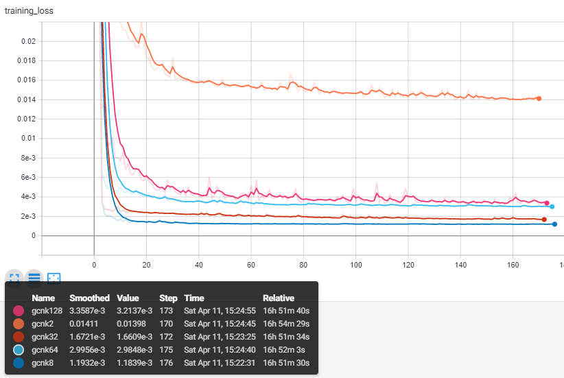
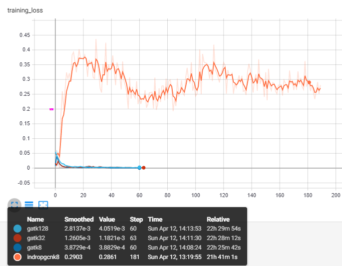
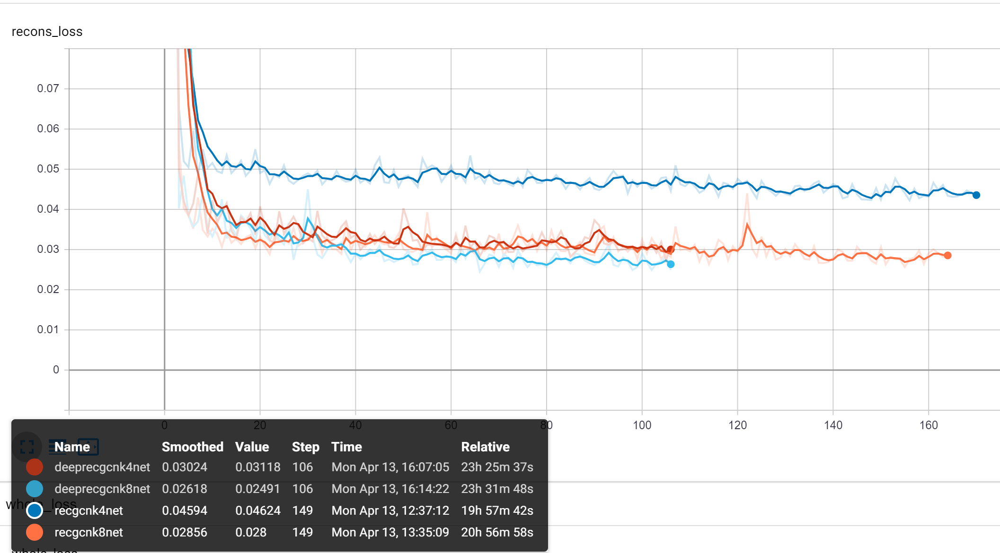
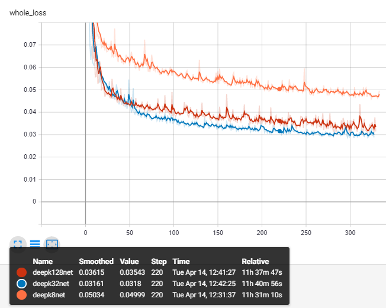
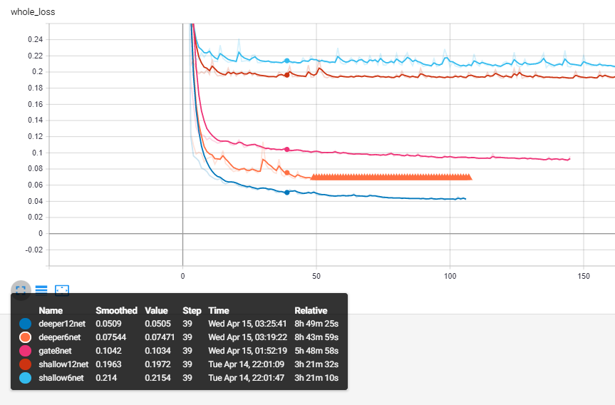

So the variation was too high if we only use 'mesh adjacencies' as edges, so Ima try making k-nearest graphs for the cube
Specs:
Layer: 3-64-64-3
Activation: Leakyrelu
Loss: MSE + MAE
Conv: GCNconv
k-n: Input graph has edges between node's n nearest neighbour spatially (each node has n edges)

Loss
Observations
Network does not get strictly better as number of edges increase
Output tends to a more rounded shape as edges in input increases
8 is best number?
GCNs trained with less edges can be generalized to some degree, but the converse does not
Note that GCNs were able to recreate the cube without having information of the original node, unlike other graph convs
GATgcns
I thought attention mechanisms could help guide the neurons to pick the correct information when edges are dense. That didn't help since it picks features oops
Layer: 3-64-64-3
Activation: Leakyrelu
Loss: MSE + MAE
Conv: GATconv
k-n: Input graph has edges between node's n nearest neighbour spatially (each node has n edges)

gatLoss
Notation:
kxony means netowrk was trained on graphs with x nearest neighbors, but input is y nearest neighbour
Gallery
GCN
GAT
k2on2
k2on8
k2on128
k8on1
k8on8
k8on128
k32on2
k32on32
k32on128
k128on2
k128on8
k128on128
gat8on8
gat8on32
gat8on128
gat32on8
gat32on32
gat32on128
gat128on8
gat128on32
gat128on128
Reconstruction
Tried dropout @ input- was bad, so reconstruction by changing input
One point
Layer: 4-64-64-3
Deep: 4-64-64-64-64-3
Activation: Leakyrelu
Loss: MSE + MAE
Conv: GCNconv
Randomly set one pixel to be missing every training, labelled as '0 0 0 1', as opposed to x y z 0

Loss
Visibility
Layer: 3-64-64-3
Activation: Leakyrelu
Loss: MSE + MAE
Conv: GCNconv
Using raycast, set occluded points to be missing every training, labelled as '0 0 0 1', as opposed to x y z 0

Loss
Visibility - deepness and edge test and gates
Theoretically, the deeper the convolution, the more neighbours could be reached. The number of edges around 8 also seem optimal so I am going to try 6 and 12.
Deep Layer: 3-64-64-64-64-64-64-64-3
Shallow Layer: 3-64-3
Activation: Leakyrelu/ with gLu
Loss: MSE + MAE
Conv: GCNconv

Loss
>Some observations:
the number of layers seem to determine the distance of propagation as seen from the difference between deep and Shallow
Gated linear units improve as connections increase?
Deeper12on12 failed when visible pixels were flipped